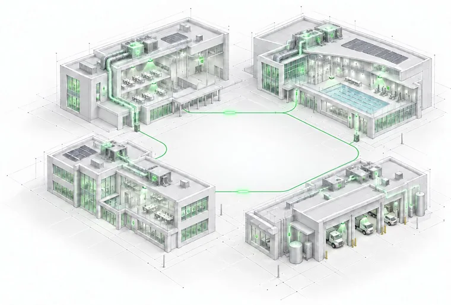

Energy Management
It requires sustained attention, reliable building and utility data, and the expertise to act on what you find. Rede provides ongoing energy management services for commercial and institutional building portfolios.

The work
Without someone dedicated to running that cycle, energy costs can drift upward and capital decisions can be made without the data needed to support them.
Rede runs the cycle alongside your team, using portfolio data to prioritize the work that matters.
The work
Without someone dedicated to running that cycle, energy costs can drift upward and capital decisions can be made without the data needed to support them.
Rede runs the cycle alongside your team, using portfolio data to prioritize the work that matters.
The partnership
This is a genuine partnership. Rede brings the energy management expertise, the RUN platform and the plan. Your team brings the buildings and the people who know them best.
We combine portfolio data with the operational knowledge held by your staff: ongoing issues, known problem buildings and context that rarely appears in a report. Together, we build an energy management program around what is actually happening in your facilities.
Talk to us about your buildingsEvery Energy Management engagement includes full access to RUN, Rede’s utility management platform. Your data, your buildings and your plan are organized in one place.
Learn about RUNThe partnership
This is a genuine partnership. Rede works as an extension of your team, not as an outside consultant delivering a report and moving on.
We combine portfolio data with the operational knowledge your staff already have, so the plan reflects how your buildings actually run.
Book a consultationWhat the program includes
Agreeing what to measure and where you stand today.
Turning the assessment into a prioritized, funded plan.
Keeping the cycle turning, month after month.
Every Energy Management engagement is scoped to your portfolio, your data and your team’s capacity.
Long-term results
One Western Canadian school division began working with Rede in 2016. Across its portfolio of 22 facilities, energy intensity declined from 302 to 198 ekWh per square metre annually—a 34% reduction. Over the course of the program, the division saved $4.4 million in energy costs.
That kind of result does not come from a single project. It comes from a continuous program: utility data tracked monthly, buildings assessed annually, projects prioritized and implemented, and a team that stays engaged long enough to see the work compound.
34% reduction in energy intensity across 22 facilities, with $4.4 million saved in energy costs over the course of the program.
Anonymized results from a 22-facility school division portfolio.
Long-term results
One Western Canadian school division began working with Rede in 2016. Across its portfolio of 22 facilities, energy intensity declined from 302 to 198 ekWh per square metre annually—a 34% reduction. Over the course of the program, the division saved $4.4 million in energy costs.
That kind of result does not come from a single project. It comes from a continuous program: utility data tracked monthly, buildings assessed annually, projects prioritized and implemented, and a team that stays engaged long enough to see the work compound.
Energy intensity · ekWh per square metre
34% reduction in energy intensity across 22 facilities, with $4.4 million saved in energy costs over the course of the program. Anonymized results from a 22-facility school division portfolio.
Other services
Investigate
A practical first step for organizations that need to understand the size of the opportunity before committing to an ongoing energy management program.
See Energy Gap AnalysisPlatform
Included in every Energy Management engagement. RUN keeps utility and facility data organized so your team can monitor what is changing month over month.
See RUNOptimize
A common early project that corrects operational drift in building automation systems and recovers energy performance without major capital projects.
See RecommissioningScoped to your portfolio
Energy Management is scoped to your organization and portfolio. Tell us what you are working with, and we will help determine what makes sense.